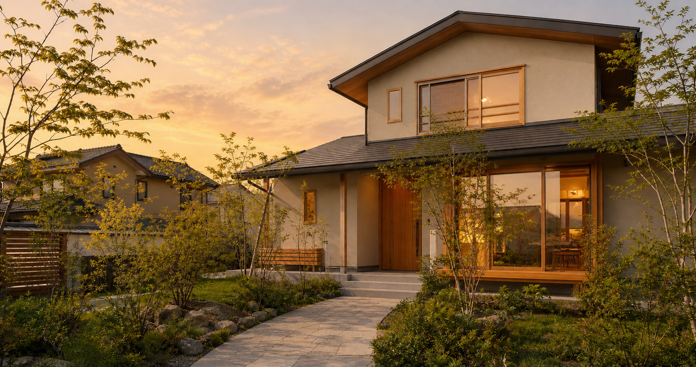
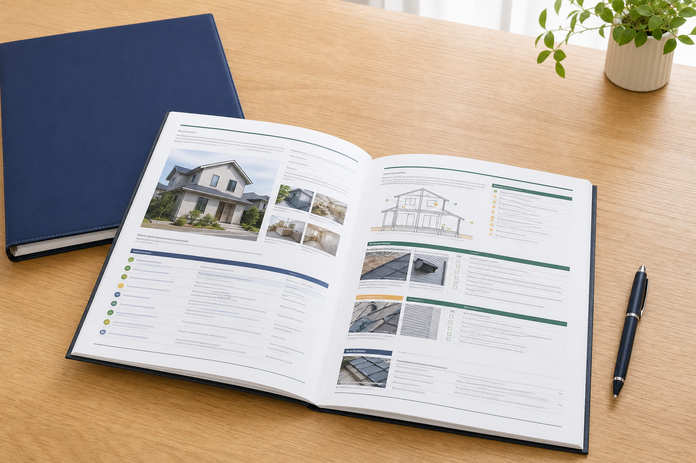

ホームインスペクション・建物調査
中古住宅の購入前、売却前、リフォーム前などに建物の状態を確認し、写真付き報告書にまとめます。
調査内容と料金を見る群馬県を拠点とする住宅・建物相談
中古住宅の購入、空き家、リフォーム、売却前の建物確認。建物・土地・費用を切り離さず、判断に必要な情報を分かりやすく整理します。
まだ物件や方針が決まっていなくても構いません。いま分かっていることからお聞かせください。

ご相談の入口
答えを決めてから相談する必要はありません。複数の事情が絡む住まいの問題を、一つずつ整理します。
主なサービス
調査や工事を先に決めるのではなく、現在の状態と知りたいことを確認して進め方を整理します。
中古住宅の購入前、売却前、リフォーム前などに建物の状態を確認し、写真付き報告書にまとめます。
調査内容と料金を見る利用、修繕、賃貸、売却、解体などの選択肢を、建物の状態や費用を踏まえて整理します。
個人のお客様向け案内を見る売買前の建物調査、既存住宅状況調査、写真、簡易図面、改修内容の確認などをご相談いただけます。
事業者向け案内を見る
ホームインスペクション
目的に応じて、外部・内部・基礎・床下・小屋裏・設備・図面などを確認します。
調査は原則として目視・非破壊で行います。点検口、家具、荷物、建物の構造などにより確認できない箇所があります。瑕疵がないことを保証する調査ではありません。
すみかみらいの特徴
一級建築士、宅地建物取引士、2級FP技能士などの知識をもとに、建物・土地・費用を切り離さず考えます。
現在の状態だけでなく、今後の修繕や利用方法を考えるための判断材料を整理します。
特定の結論を先に決めず、確認できた事実と希望をもとに選択肢を比較します。
主な料金（税込）
建物の規模、所在地、現地条件によって追加費用が生じる場合があります。
マンション55,000円、戸建住宅66,000円（延床40坪まで）。写真付き報告書を含みます。
内覧会同行55,000円、各工程検査66,000円。複数回の検査コースもあります。

調査後の報告書
調査内容に応じて、約40〜60ページ、写真100枚以上を目安にまとめます。
ご相談の流れ
内容に応じて必要な手順だけを確認しながら進めます。
分かる範囲で相談内容をお知らせください。
現在の状況と知りたいことを整理します。
必要な場合は調査範囲と料金を確認します。
決定した内容に沿って確認します。
確認結果と選択肢を分かりやすく共有します。
代表・事務所案内
代表 狩野 聖敦
住宅の営業、設計、積算、施工管理、引渡し、不動産実務の経験を活かし、建物だけでなく土地や費用も含めて相談内容を整理します。
一級建築士、宅地建物取引士、2級ファイナンシャル・プランニング技能士、既存住宅状況調査技術者、相続診断士などの資格を、異なる立場の話をつなぐために活かします。
一級建築士事務所の登録状況
現在、建築士事務所登録の手続中です。登録完了後に登録番号を掲載します。
対応エリア
群馬県・栃木県・長野県・埼玉県・東京都からのご相談に対応します。場所と内容を確認し、対応方法と出張費をご案内します。
出張費無料地域
前橋市・高崎市・伊勢崎市・渋川市・玉村町・吉岡町・榛東村
群馬県内その他は＋5,500円、群馬県外は別途お見積りです。
よくある質問
はい。現在分かっていることと、知りたいことを確認するところから始めます。
購入前のホームインスペクションについて相談できます。売主様や仲介会社との日程調整が必要になる場合があります。
目視できる範囲を中心とした非破壊調査のため、仕上げ材の内部や確認できない箇所まで判断することはできません。
不動産会社、管理会社、工務店などからの建物調査や既存住宅状況調査についてご相談いただけます。
お問い合わせ
フォーム送信機能は準備中です。現在はメールまたは電話でお問い合わせください。料金が発生する場合は、内容を確認して事前にご案内します。
お知らせいただきたいこと
物件所在地、建物の種類、現在の状況、知りたいこと。分からない項目は空欄で構いません。